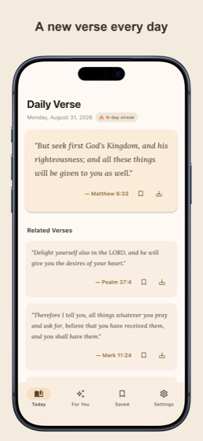
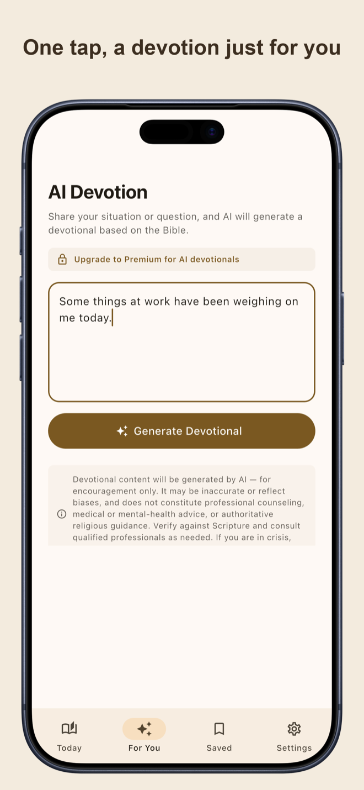
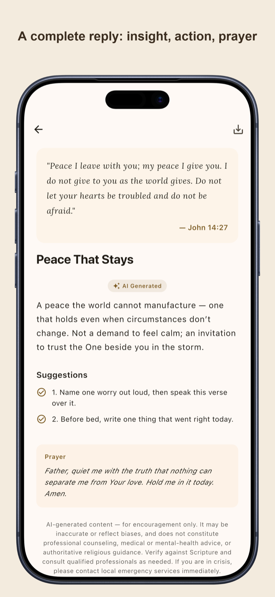
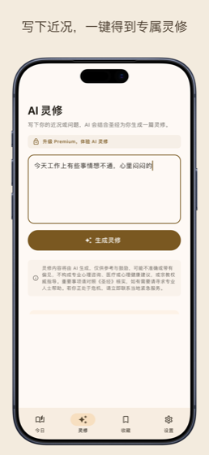
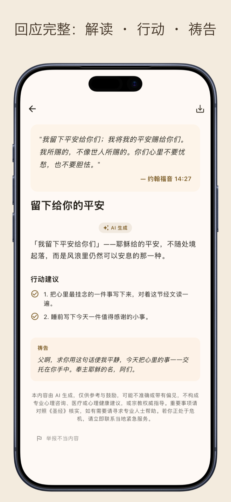

English below · 中文完整版见下方
Ask, and the Bible may answer.
Let Scripture meet you every day.



Privacy-first by design. No ads, no analytics SDKs, no trackers. Sign-in is optional and uses an anonymous identifier — never your email or name. AI input is processed in the EU and kept only in your deletable devotional history. See the Privacy Policy.
AI never fabricates scripture. Verse text is always looked up from the built-in public-domain Bible (CUV 1919 + WEB, 31,091 verses) — never recalled from AI memory.
Crisis-safe. If you share thoughts of self-harm, the app responds with vetted help resources instead of generated content.
7-day free trial for new users · charged to your Apple ID · cancel anytime, at least 24 hours before the period ends.
Free features stay free forever — no subscription needed.
你的问题，圣经里或许有答案。
把圣经，放进你的每一天。


隐私优先。无广告、无分析 SDK、无追踪。登录可选,且只使用匿名标识——绝不需要你的邮箱或姓名。AI 输入在欧盟处理;仅保存于你账号下可随时删除的灵修历史。详见隐私政策。
AI 不伪造经文。经文正文永远由内置的公有领域圣经(和合本 1919 + 英文 WEB,31,091 节)按出处取出,绝不靠 AI 记忆复述。
危机安全。若你写下自伤的念头,App 会回应经过审核的帮助资源,而不是生成内容。
新用户 7 天免费试用 · 从 Apple ID 扣费 · 随时取消(周期结束前至少 24 小时)。
免费功能永久免费——无需订阅。